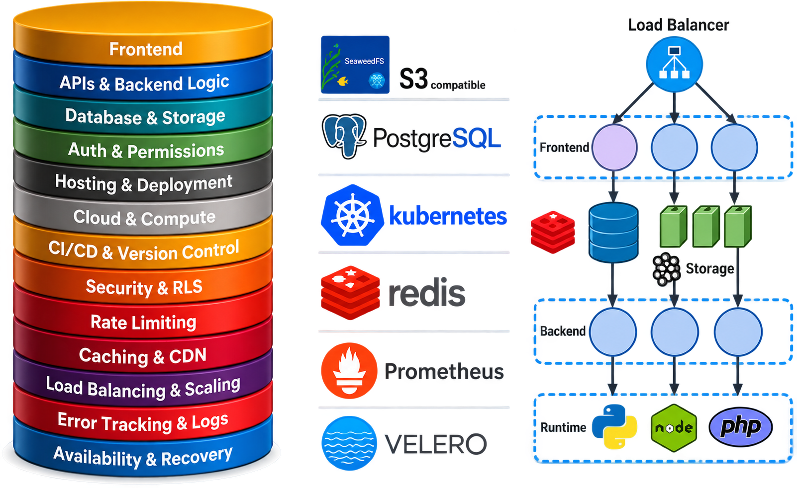
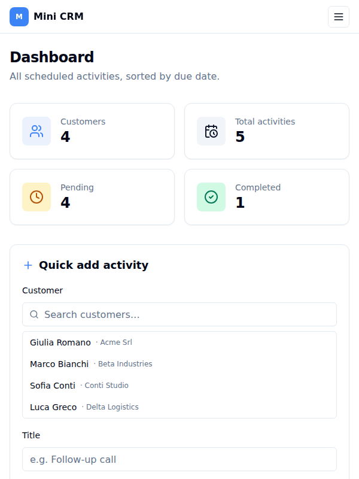
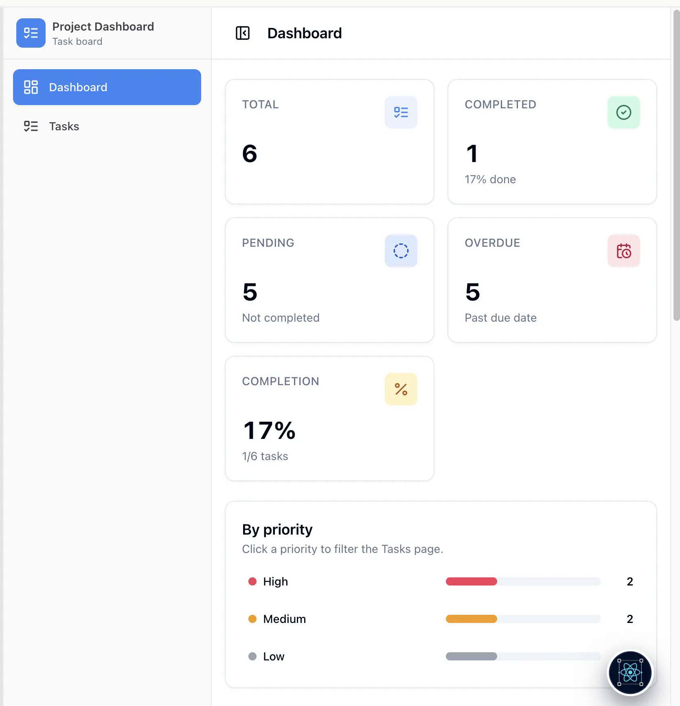
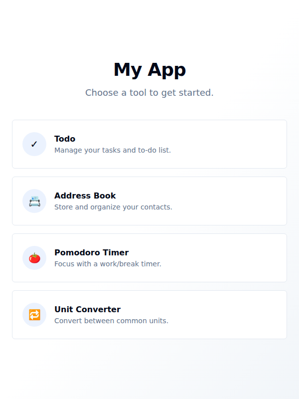
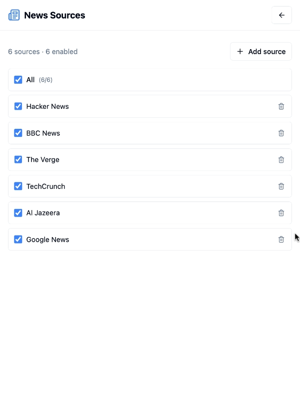
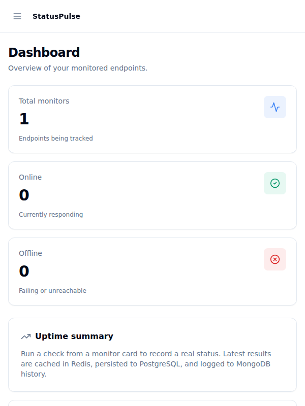
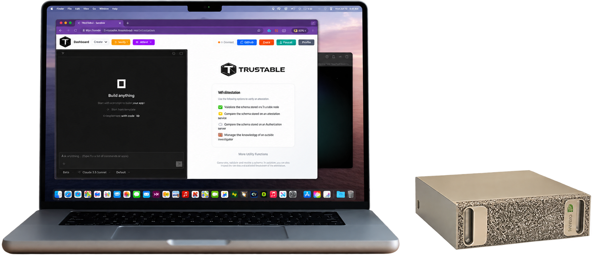
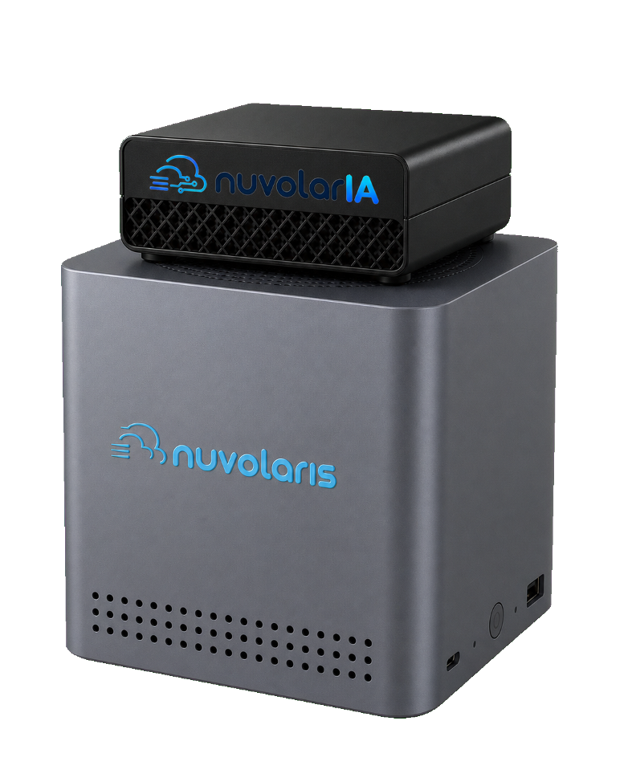
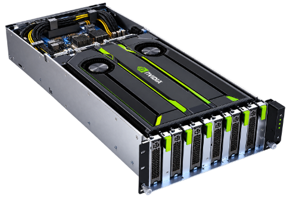

A Trustable Code Assistant for Private AI
- Build full-stack applications on your PC with AI you control
- Run your AI locally, on a workstation, a private server or your own data center
- Then publish your application wherever you need it
Built with Apache OpenServerless — Powered by Nuvolaris
Frontend, APIs, database and storage, hosting, compute, functions, security, rate limiting, caching, load balancing, logging and recovery — Kubernetes, S3-compatible storage, PostgreSQL, Redis, Prometheus and Velero, integrated and running on infrastructure you control. A load-balanced controller dispatches work through Kafka to invokers that run your actions in the runtime each one needs.

Start from a working application
No need to start from scratch. Pick a ready-to-use application and customise it to your needs with the AI, on your own infrastructure.
Demo
Examples
-

Mini CRM Customers on one side, scheduled activities on the other. -

Project Dashboard Track projects and what is due next. -

App Suite A small suite of everyday productivity tools. -

News Aggregator Collect and read feeds in one place. -

API Status Monitor Watch the APIs you depend on.
Utilities
Every application runs on your own stack, on hardware you control.
Build on your PC. Publish anywhere.
Move from an idea to a running application with a coding assistant and an integrated application environment.
Choose your Private AI
Connect Trustant to AI running on your PC, an AI workstation, a private server, or your sovereign infrastructure.
Build and run your application
Describe what you need. Use Trustant to create and refine your frontend, backend, and data connections, then run and test the application on your PC.
Publish where you need it
Deploy your application to a compatible environment on your own server, a private cluster, or infrastructure in a data center you control.

PC with Trustant
Build and test here

AI appliance

Private Server
Sovereign Data Center
Publish: where your application runs
A coding assistant with a complete application platform
Trustant is built on a full-stack, private, cloud-native environment based on Apache OpenServerless. Your assistant works alongside the environment where your application runs, bringing development and deployment together.
Trustant coding assistant, connected to your chosen Private AI.
Your application: frontend, backend actions, and APIs.
Apache OpenServerless: application runtime, data, and storage services.
Your infrastructure: PC, server, cluster, or data center.
Build the full application
Bring the frontend, backend actions, APIs, and data connections into one development workflow.
Run on a private foundation
Use Apache OpenServerless as the foundation for application execution and platform services on infrastructure you control.
Carry your work into deployment
Develop locally, then prepare and publish your application to your chosen compatible server or cluster environment.
Build tools for the work that stays private
Turn your own workflows into applications, using your chosen Private AI and application infrastructure.
Start self-hosted. Grow to a private cluster.
Choose the Trustant setup that fits your infrastructure.
Open Source
Install and manage your own open-source environment.
Desktop + Server
Build on your desktop and deploy to one private server.
Desktop + Cluster
Run a resilient private deployment across three servers.
Frequently asked questions
What is Trustant?
Trustant is a coding assistant for Private AI, built on a full-stack, private, cloud-native environment based on Apache OpenServerless. It brings application development and the environment where your application runs into one workflow.
Does Private AI have to run on my PC?
No. You can use AI on your PC, an AI workstation such as NVIDIA DGX Spark, a private server, or sovereign infrastructure in a data center you control.
Do I need an AI workstation?
An AI workstation is one option. Your setup depends on the model you choose and the resources it needs; you can also use local AI or a private AI server.
What does Apache OpenServerless provide?
Apache OpenServerless provides the foundation for the private application environment underneath Trustant, including application execution and platform services. Trustant adds the coding assistant experience to that foundation.
Can I build locally and deploy elsewhere?
Yes. Build and test on your PC, then deploy to a compatible server, cluster, or data center environment. Choose the deployment destination and configure its services and access for your application.
Is there a free option?
Yes. Install Trustant OpenSource and Apache OpenServerless yourself for a free, self-hosted software setup. You provide and operate the infrastructure.
What is included in the cluster package?
The $10,000 package includes Trustant Desktop and Trustant Cluster for three servers and six virtual machines, with self-healing and backups included.
Will my data stay private?
Trustant is designed for AI and applications running on infrastructure you control. Keeping data within that environment also depends on your chosen models, connected services, access settings, and deployment configuration.
Build with Private AI. Publish on your terms.
Start on your PC and choose the infrastructure that fits your application, from a private server to your own sovereign data center.